공조냉동기계기사(구) (2021-03-07 기출문제)
1과목: 기계열역학
1. 증기터빈에서 질량유량이 1.5kg/s이고, 열손실률이 8.5kW이다. 터빈으로 출입하는 수증기에 대한 값은 아래 그림과 같다면 터빈의 출력은 약 몇 kW인가?
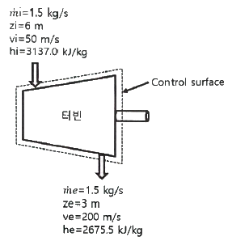
- 273 kW
- 656 kW
- 1357 kW
- 2616 kW
(정답률: 46%)

2. 10℃에서 160℃까지 공기의 평균 정적비열은 0.7315 kJ/(kg·K)이다. 이 온도 변화에서 공기 1kg의 내부에너지 변화는 약 몇 kJ인가?
- 101.1 kJ
- 109.7 kJ
- 120.6 kJ
- 131.7 kJ
(정답률: 63%)
3. 오토사이클의 압축비(ε)가 8일 때 이론열효율은 약 몇 % 인가? (단, 비열비(k)는 1.4이다.)
- 36.8%
- 46.7%
- 56.5%
- 66.6%
(정답률: 59%)
4. 증기를 가역 단열과정을 거쳐 팽창시키면 증기의 엔트로피는?
- 증가한다.
- 감소한다.
- 변하지 않는다.
- 경우에 따라 증가도 하고, 감소도 한다.
(정답률: 49%)
5. 완전가스의 내부에너지(u)는 어떤 함수인가?
- 압력과 온도의 함수이다.
- 압력만의 함수이다.
- 체적과 압력의 함수이다.
- 온도만의 함수이다.
(정답률: 47%)
6. 온도가 127℃, 압력이 0.5MPa, 비체적이 0.4m3/kg인 이상기체가 같은 압력 하에서 비체적이 0.3m3/kg으로 되었다면 온도는 약 몇 ℃가 되는가?
- 16
- 27
- 96
- 300
(정답률: 44%)
7. 계가 비가역 사이클을 이룰 때 클라우지우스(Clausius)의 적분을 옳게 나타낸 것은? (단, T는 온도, Q는 열량이다.)
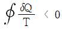
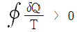
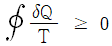
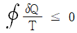
(정답률: 49%)
8. 증기동력 사이클의 종류 중 재열사이클의 목적으로 가장 거리가 먼 것은?
- 터빈 출구의 습도가 증가하여 터빈 날개를 보호한다.
- 이론 열효율이 증가한다.
- 수명이 연장된다.
- 터빈 출구의 질(quakity)을 향상시킨다.
(정답률: 52%)
9. 밀폐용기에 비내부에너지가 200kJ/kg인 기체가 0.5kg 들어있다. 이 기체를 용량이 500W인 전기가열기로 2분 동안 가열한다면 최종상태에서 기체의 내부에너지는 약 몇 kJ인가? (단, 열량은 기체로만 전달된다고 한다.)
- 20 kJ
- 100 kJ
- 120 kJ
- 160 kJ
(정답률: 43%)
10. 과열증기를 냉각시켰더니 포화영역 안으로 들어와서 비체적이 0.2327 m3/kg이 되었다. 이 때 포화액과 포화증기의 비체적이 각각 1.079×10-3 m3/kg, 0.5243 m3/kg 이라면 건도는 얼마인가?
- 0.964
- 0.772
- 0.653
- 0.443
(정답률: 46%)
11. 온도 20℃에서 계기압력 0.183 MPa의 타이어가 고속주행으로 온도 80℃로 상승할 때 압력은 주행 전과 비교하여 약 몇 kPa 상승하는가? (단, 타이어의 체적은 변하지 않고, 타이어 내의 공기는 이상기체로 가정하며, 대기압은 101.3 kPa 이다.)
- 37 kPa
- 58 kPa
- 286 kPa
- 445 kPa
(정답률: 44%)
12. 이상적인 카르노 사이클의 열기관이 500℃인 열원으로부터 500 kJ을 받고, 25℃에 열을 방출한다. 이 사이클의 일(W)과 효율(ηth)은 얼마인가?
- W = 307.2 kJ, ηth = 0.6143
- W = 307.2 kJ, ηth = 0.5748
- W = 250.3 kJ, ηth = 0.6143
- W = 250.3 kJ, ηth = 0.5748
(정답률: 50%)
13. 한 밀폐계가 190 kJ의 열을 받으면서 외부에 20 kJ의 일을 한다면 이 계의 내부에너지의 변호는 약 얼마인가?
- 210 kJ 만큼 증가한다.
- 210 kJ 만큼 감소한다.
- 170 kJ 만큼 증가한다.
- 170 kJ 만큼 감소한다.
(정답률: 49%)
14. 수소(H2)가 이상기체라면 절대압력 1 MPa, 온도 100℃에서의 비체적은 약 몇 m3/kg 인가? (단, 일반기체상수는 8.3145 kJ/(kmol·K) 이다.)
- 0.781
- 1.26
- 1.55
- 3.46
(정답률: 53%)
15. 비열비가 1.29, 분자량이 44인 이상 기체의 정압비열은 약 몇 kJ/(kg·K)인가? (단, 일반기체상수는 8.314 kJ/(kmol·K) 이다.)
- 0.51
- 0.69
- 0.84
- 0.91
(정답률: 43%)
16. 열펌프를 난방에 이용하려 한다. 실내 온도는 18℃이고, 실외 온도는 –15℃이며 벽을 통한 열손실은 12kW 이다. 열펌프를 구동하기 위해 필요한 최소 동력은 약 몇 kW 인가?
- 0.65 kW
- 0.74 kW
- 1.36 kW
- 1.53 kW
(정답률: 38%)
17. 어떤 냉동기에서 0℃의 물로 0℃의 얼음 2 ton을 만드는데 180 MJ의 일이 소요된다면 이 냉동기의 성적계수는? (단, 물의 융해열은 334 kJ/kg 이다.)
- 2.⑤
- 2.32
- 2.65
- 3.71
(정답률: 45%)
18. 다음 중 가장 낮은 온도는?
- 104℃
- 287°F
- 410K
- 684R
(정답률: 52%)
19. 계가 정적 과정으로 상태 1에서 상태 2로 변화할 때 단순압축성 계에 대한 열역학 제1법칙을 바르게 설명한 것은? (단, U, Q, W는 각각 내부에너지, 열량, 일량이다.)
- U1 - U2 = Q12
- U2 - U1 = W12
- U1 - U2 = W12
- U2 - U1 = Q12
(정답률: 45%)
20. 온도 15℃, 압력 100kPa 상태의 체적이 일정한 용기 안에 어떤 이상 기체 5kg이 들어있다. 이 기체가 50℃가 될 때까지 가열되는 동안의 엔트로피 증가량은 약 몇 kJ/K 인가? (단, 이 기체의 정압비열과 정적비열은 각각 1.001 kJ/(kg·K), 0.7171 kJ/(kg·K) 이다.)
- 0.411
- 0.486
- 0.575
- 0.732
(정답률: 40%)
2과목: 냉동공학
21. 브라인(2차 냉매)중 무기질 브라인이 아닌 것은?
- 염화마그네슘
- 에틸렌글리콜
- 염화칼슘
- 식염수
(정답률: 61%)
22. 냉동기유의 구비조건을 틀린 것은?
- 점도가 적당할 것
- 응고점이 높고 인화점이 낮을 것
- 유성이 좋고 유막을 잘 형성할 수 있을 것
- 수분 등의 불순물을 포함하지 않을 것
(정답률: 62%)
23. 흡수식 냉동장치에서 흡수제 유동방향으로 틀린 것은?
- 흡수기 → 재생기 → 흡수기
- 흡수기 → 재생기 → 증발기 → 응축기 → 흡수기
- 흡수기 → 용액열교환기 → 재생기 → 용액열교환기 → 흡수기
- 흡수기 → 고온재생기 → 저온재생기 → 흡수기
(정답률: 53%)
24. 냉동장치가 정상운전 되고 있을 때 나타나는 현상으로 옳은 것은?
- 팽창밸브 직후의 온도는 직전의 온도보다 높다.
- 크랭크 케이스 내의 유온은 증발온도보다 낮다.
- 수액기 내의 액온은 응축온도보다 높다.
- 응축기의 냉각수 출구온도는 응축온도보다 낮다.
(정답률: 49%)
25. 그림은 R-134a를 냉매로 한 건식 증발기를 가진 냉동장치의 개략도이다. 지점 1, 2에서의 게이지 압력은 각각 0.2 MPa, 1.4 MPa으로 측정되었다. 각 지점에서의 엔탈피가 아래 표와 같을 때, 5지점에서의 엔탈피(kJ/kg)는 얼마인가? (단, 비체적(v1)은 0.08 m3/kg 이다.)
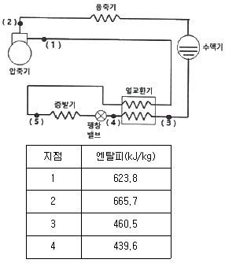
- 20.9
- 112.8
- 408.6
- 602.9
(정답률: 35%)
26. 냉동용 압축기를 냉동법의 원리에 의해 분류할 때, 저온에서 증발한 가스를 압축기로 압축하여 고온으로 이동시키는 냉동법을 무엇이라고 하는가?
- 화학식 냉동법
- 기계식 냉동법
- 흡착식 냉동법
- 전자식 냉동법
(정답률: 62%)
27. 실제 기체가 이상 기체의 상태방정식을 근사하게 만족시키는 경우는 어떤 조건인가?
- 압력과 온도가 모두 낮은 경우
- 압력이 높고 온도가 낮은 경우
- 압력이 낮고 온도가 높은 경우
- 압력과 온도 모두 높은 경우
(정답률: 37%)
28. 가역 카르노 사이클에서 고온부 40℃, 저온부 0℃로 운전될 때, 열기관의 효율은?
- 7.825
- 6.825
- 0.147
- 0.128
(정답률: 52%)
29. 표준 냉동사이클에서 냉매의 교축 후에 나타나는 현상으로 틀린 것은?
- 온도는 강하한다.
- 압력은 강하한다.
- 엔탈피는 일정하다.
- 엔트로피는 감소한다.
(정답률: 53%)
30. 다음 조건을 이용하여 응축기 설계 시 1RT(3.86 kW)당 응축면적(m2)은? (단, 온도차는 산술평균온도차를 적용한다.)
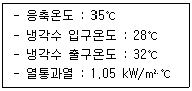
- 1.⑤
- 0.74
- 0.52
- 0.35
(정답률: 43%)
31. 수액기에 대한 설명으로 틀린 것은?
- 응축기에서 응축된 고온고압의 냉매액을 일시 저장하는 용기이다.
- 장치 안에 있는 모든 냉매를 응축기와 함께 회수할 정도의 크기를 선택하는 것이 좋다.
- 소형 냉동기에는 필요로 하지 않다.
- 어큐뮬레이터라고도 한다.
(정답률: 36%)
32. 히트파이프(heat pipe)의 구성요소가 아닌 것은?
- 단열부
- 응축부
- 증발부
- 팽창부
(정답률: 48%)
33. 다음 중 빙축열시스템의 분류에 대한 조합으로 적당하지 않은 것은?
- 정적제빙형 - 관내착빙형
- 정적제빙형 - 캡슐형
- 동적제빙형 - 관외착빙형
- 동적제빙형 – 과냉각아이스형
(정답률: 61%)
34. 암모니아 냉동장치에서 고압측 게이지 압력이 1372.9 kPa, 저압측 게이지 압력이 294.2 kPa이고, 피스톤 압출량이 100m3/h, 흡입증기의 비체적이 0.5m3/kg 일 때, 이 장치에서의 압축비와 냉매순한량(kg/h)은 각각 얼마인가? (단, 압축기의 체적효율은 0.7 이다.)
- 압축비 3.73, 냉매순환량 70
- 압축비 3.73, 냉매순환량 140
- 압축비 4.67, 냉매순환량 70
- 압축비 4.67, 냉매순환량 140
(정답률: 41%)
35. 흡수식 냉동기의 특징에 대한 설명으로 옳은 것은?
- 자동제어가 어렵고 운전경비가 많이 소요된다.
- 초기 운전 시 정격 성능을 발휘할 때까지의 도달 속도가 느리다.
- 부분 부하에 대한 대응이 어렵다.
- 증기 압축식보다 소음 및 진동이 크다.
(정답률: 56%)
36. 표준 냉동사이클에서 상태 1, 2, 3에서의 각 성적계수 값을 모두 합하며 약 얼마인가?
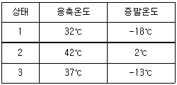
- 5.11
- 10.89
- 17.17
- 25.14
(정답률: 56%)
37. 다음 중 액압축을 방지하고 압축기를 보호하는 역할을 하는 것은?
- 유분리기
- 액분리기
- 수액기
- 드라이어
(정답률: 60%)
38. 여름철 공기열원 열펌프 장치로 냉방 운전할 때, 외기의 건구온도 저하 시 나타나는 현상으로 옳은 것은?
- 응축압력이 상승하고, 장치의 소비전력이 증가한다.
- 응축압력이 상승하고, 장치의 소비전력이 감소한다.
- 응축압력이 저하하고, 장치의 소비전력이 증가한다.
- 응축압력이 저하하고, 장치의 소비전력이 감소한다.
(정답률: 40%)
39. 냉동능력이 10RT이고 실제 흡입가스의 체적이 15m3/h인 냉동기의 냉동효과(kJ/kg)는? (단, 압축기 입구 비체적은 0.52m3/kg 이고, 1RT는 3.86kW 이다.)
- 4817.2
- 3128.1
- 2984.7
- 1534.8
(정답률: 42%)
40. R-22를 사용하는 냉동장치에 R-134a를 사용하려 할 때, 장치의 운전 시 유의사항으로 틀린 것은?
- 냉매의 능력이 변하므로 전동기 용량이 충분한지 확인한다.
- 응축기, 증발기 용량이 충분한지 확인한다.
- 가스켓, 시일 등의 패킹 선정에 유의해야 한다.
- 동일 탄화수소계 냉매이므로 그대로 운전할 수 있다.
(정답률: 64%)
3과목: 공기조화
41. 기후에 따른 불쾌감을 표시하는 불쾌지수는 무엇을 고려한 지수인가?
- 기온과 기류
- 기온과 노점
- 기온과 복사열
- 기온과 습도
(정답률: 67%)
42. 개별 공기조화방식에 사용되는 공기조화기에 대한 설명으로 틀린 것은?
- 사용하는 공기조화기의 냉각코일에는 간접팽창코일을 사용한다.
- 설치가 간편하고 운전 및 조작이 용이하다.
- 제어대상에 맞는 개별 공조기를 설치하여 최적의 운전이 가능하다.
- 소음이 크나, 국소운전이 가능하여 에너지 절약적이다.
(정답률: 44%)
43. 외기 및 반송(return)공기의 분진량이 각각 CO, CR이고, 공급되는 외기량 및 필터로 반송되는 공기량이 각각 QO, QR이며, 실내 발생량이 M이라 할 때, 필터의 효율(η)을 구하는 식으로 옳은 것은?
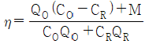
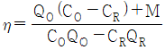
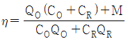
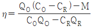
(정답률: 41%)
44. 극간풍(틈새바람)에 의한 침입 외기량이 2800L/s일 때, 현열부하(qS)와 잠열부하(qL)는 얼마인가? (단, 실내의 공기온도와 절대습도는 각각 25℃, 0.0179 kg/kgDA이고, 외기의 공기온도와 절대습도는 각각 32℃, 0.0209 kg/kgDA이며, 건공기 정압비열 1.0⑤ kJ/kg·K, 0℃ 물의 증발잠열 2501 kJ/kg, 공기밀도 1.2 kg/m3 이다.)
- qS : 23.6kW, qL : 17.8kW
- qS : 18.9kW, qL : 17.8kW
- qS : 23.6kW, qL : 25.2kW
- qS : 18.9kW, qL : 25.2kW
(정답률: 41%)
45. 바닥취출 공조방식의 특징으로 틀린 것은?
- 천장 덕트를 최소화 하여 건축 충고를 줄일 수 있다.
- 개기인에 맞추어 풍량 및 풍속 조절이 어려워 쾌적성이 저해된다.
- 가압식의 경우 급기거리가 18m 이하로 제한된다.
- 취출온도와 실내온도 차이가 10℃ 이상이면 드래프트 현상을 유발할 수 있다.
(정답률: 47%)
46. 노점온도(dew point temperature)에 대한 설명으로 옳은 것은?
- 습공기가 어느 한계까지 냉각되어 그 속에 있던 수증기가 이슬방울로 응축되기 시작하는 온도
- 건공기가 어느 한계까지 냉각되어 그 속에 있던 공기가 팽창하기 시작하는 온도
- 습공기가 어느 한계까지 냉각되어 그 속에 있던 수증기가 자연 증발하기 시작하는 온도
- 건공기가 어느 한계까지 냉각되어 그 속에 있던 공기가 수축하기 시작하는 온도
(정답률: 63%)
47. 온수난방에 대한 설명으로 틀린 것은?
- 난방부하에 따라 온도조절을 용이하게 할 수 있다.
- 예열시간은 길지만 잘 식지 않으므로 증기난방에 비하여 배관의 동결우려가 적다.
- 열용량이 증기보다 크고 실온 변동이 적다.
- 증기난방보다 작은 방열기 또는 배관이 필요하므로 배관공사비를 절감할 수 있다.
(정답률: 48%)
48. 습공기의 상대습도(ø)와 절대습도(ω)와의 관계에 대한 계산식으로 옳은 것은? (단, Pa는 건공기 분압, Ps는 습공기와 같은 온도의 포화수증기 압력이다.)
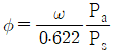
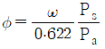
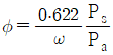
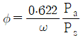
(정답률: 31%)
49. 취출기류에 관한 설명으로 틀린 것은?
- 거주영역에서 취출구의 최소 확산반경이 겹치면 편류현상이 발생한다.
- 취출구인 베인 각도를 확대시키면 소음이 감소한다.
- 천장 취출 시 베인의 각도를 냉방과 난방시 다르게 조정해야 한다.
- 취출기류의 강하 및 상승거리는 기류의 풍속 및 실내공기와의 온도차에 따라 변한다.
(정답률: 56%)
50. 공기조화 설비에서 공기의 경로로 옳은 것은?
- 환기덕트 → 공조기 → 급기덕트 → 취출구
- 공조기 → 환기덕트 → 급기덕트 → 취출구
- 냉각탑 → 공조기 → 냉동기 → 취출구
- 공조기 → 냉동기 → 환기덕트 → 취출구
(정답률: 55%)
51. 보일러의 성능에 관한 설명으로 틀린 것은?
- 증발계수는 1시간당 증기발생량에 시간당 연료소비량으로 나눈 값이다.
- 1보일러 마력은 매시 100℃의 물 15.65kg을 같은 온도의 증기로 변화 시킬 수 있는 능력이다.
- 보일러 효율은 증기에 흡수된 열량과 연료의 발열량과의 비이다.
- 보일러 마력을 전열면적으로 표시할 때는 수관 보일러의 전열면적 0.929m2를 1보일러 마력이라 한다.
(정답률: 30%)
52. 냉동창고의 벽체가 두께 15cm, 열전도율 1.6 W/m·℃인 콘크리트와 두께 5cm, 열전도율이 1.4 W/m·℃인 모르타르로 구성되어 있다면 벽체의 열통과율(W/m2·℃)은? (단, 내벽측 표면 열전달률은 9.3 W/m2·℃, 외벽측 표면 열전달률은 23.2W/m2·℃이다.)
- 1.11
- 2.58
- 3.57
- 5.91
(정답률: 53%)
53. 가습장치에 대한 설명으로 옳은 것은?
- 증기분무 방법은 제어의 응답성이 빠르다.
- 초음파 가습기는 다량의 가습에 적당하다.
- 순환수 가습은 가열 및 가습효과가 있다.
- 온수 가습은 가열·감습이 된다.
(정답률: 40%)
54. 공기조화 설비에 관한 설명으로 틀린 것은?
- 이중덕트 방식은 개별 제어를 할 수 있는 이점이 있지만, 단일덕트 방식에 비해 설비비 및 운전비가 많아진다.
- 변풍량 방식은 부하의 증가에 대처하기 용이하며, 개별제어가 가능하다.
- 유인유닛 방식은 개별제어가 용이하며, 고속덕트를 사용할 수 있어 덕트 스페이스를 작게 할 수 있다.
- 각층 유닛 방식은 중앙기계실 면적이 작게 차지하고, 공조기의 유지관리가 편하다.
(정답률: 39%)
55. 다음 온수난방 분류 중 적당하지 않은 것은?
- 고온수식, 저온수식
- 중력순환식, 강제순환식
- 건식환수법, 습식환수법
- 상향공급식, 하향공급식
(정답률: 40%)
56. 축열 시스템에서 수축열조의 특징으로 옳은 것은?
- 단열, 방수공사가 필요 없고 축열조를 따로 구축하는 경우 추가비용이 소요되지 않는다.
- 축열배관 계통이 여분으로 필요하고 배관설비비 및 반송 동력비가 절약된다.
- 축열수의 혼합에 따른 수온저하 때문에 공조기 코일 열수, 2차측 배관계의 설비가 감소할 가능성이 있다.
- 열원기기는 공조부하의 변동에 직접 추종할 필요가 없고 효율이 높은 전부하에서의 연속운전이 가능하다.
(정답률: 38%)
57. 온풍난방에 관한 설명으로 틀린 것은?
- 실내 층고가 높을 경우 상하 온도차가 커진다.
- 실내의 환기나 온습도 조절이 비교적 용이하다.
- 직접 난방에 비하여 설비비가 높다.
- 국부적으로 과열되거나 난방이 잘 안되는 부분이 발생한다.
(정답률: 51%)
58. 냉방부하에 따른 열의 종류로 틀린 것은?
- 인체의 발생열 – 현열, 잠열
- 틈새바람에 의한 열량 – 현열, 잠열
- 외기 도입량 – 현열, 잠열
- 조명의 발생열 – 현열, 잠열
(정답률: 58%)
59. 다음 중 라인형 취출구의 종류로 가장 거리가 먼 것은?
- 브리즈 라인형
- 슬롯형
- T-라인형
- 그릴형
(정답률: 43%)
60. 다음 중 원심식 송풍기가 아닌 것은?
- 다익 송풍기
- 프로펠러 송풍기
- 터보 송풍기
- 익형 송풍기
(정답률: 38%)
4과목: 전기제어공학
61. 목표치가 시간에 관계없이 일정한 경우로 정전압 장치, 일정 속도제어 등에 해당하는 제어는?
- 정치제어
- 비율제어
- 추종제어
- 프로그램제어
(정답률: 47%)
62. 단상 교류전력을 측정하는 방법이 아닌 것은?
- 3전압계법
- 3전류계법
- 단상전력계법
- 2전력계법
(정답률: 30%)
63. 교류를 직류로 변환하는 전기기기가 아닌 것은?
- 수은정류기
- 단극발전기
- 회전변류기
- 컨버터
(정답률: 39%)
64. 제어계의 구성도에서 개루프 제어계에는 없고 폐루프 제어계에만 있는 제어 구성요소는?
- 검출부
- 조작량
- 목표값
- 제어대상
(정답률: 45%)
65. R = 4Ω, XL = 9Ω, XC = 6Ω인 직렬접속회로의 어드미턴스(℧)는?
- 4 + j8
- 0.16 – j0.12
- 4 – j8
- 0.16 + j0.12
(정답률: 33%)
66. 발열체의 구비조건으로 틀린 것은?
- 내열성이 클 것
- 용융온도가 높을 것
- 산화온도가 낮을 것
- 고온에서 기계적 강도가 클 것
(정답률: 57%)
67. PLC(Programmable Logic Controller)에 대한 설명 중 틀린 것은?
- 시퀀스제어 방식과는 함께 사용할 수 없다.
- 무접점 제어방식이다.
- 산술연산, 비교연산을 처리할 수 있다.
- 계전기, 타이머, 카운터의 기능까지 쉽게 프로그램 할 수 있다.
(정답률: 55%)
68. 그림과 같은 유접점 논리회로를 간단히 하면?
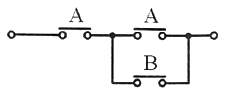
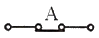
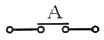
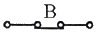
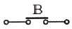
(정답률: 58%)
69. 그림과 같은 블록선도에서 C(s)는? (단, G1(s) = 5, G2(s) = 2, H(s) = 0.1, R(s) = 1 이다.)
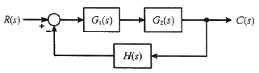
- 0
- 1
- 5
- ∞
(정답률: 46%)
70. 전위의 분포가 V = 15x + 4y2으로 주어질 때 점(x=3, y=4)d서 전계의 세기(V/m)는?
- -15i + 32j
- -15i - 32j
- 15i + 32j
- 15i – 32j
(정답률: 21%)
71. 입력이 011(2)일 때, 출력이 3V인 컴퓨터 제어의 D/A 변환기에서 입력을 101(2)로 하였을 때 출력은 몇 V 인가? (단, 3 bit 디지털 입력이 011(2)은 off, on, on을 뜻하고 입력과 출력은 비례한다.)
- 3
- 4
- 5
- 6
(정답률: 50%)
72.
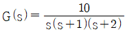
의 최종값은?- 0
- 1
- 5
- 10
(정답률: 39%)
73. 잔류편차와 사이클링이 없고, 간헐현상이 나타나는 것이 특징인 동작은?
- I 동작
- D 동작
- P 동작
- PI 동작
(정답률: 48%)
74. 피상전력이 Pa(kVA)이고 무효전력이 Pr(kvar)인 경우 유효전력 P(kW)를 나타낸 것은?
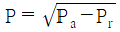
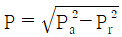
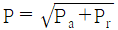
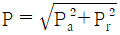
(정답률: 54%)
75. 3상 교류에서 a, b, c상에 대한 전압을 기호법으로 표시하면 Ea = E∠0°, Eb = E∠-120°, Ec = E∠120° 로 표시된다. 여기서
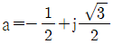
라는 페이저 연산자를 이용하면 Ec는 어떻게 표시되는가?- Ec = E
- Ec = a2E
- Ec = aE
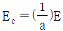
(정답률: 36%)
76. 상호인덕턴스 150mH인 a, b 두 개의 코일이 있다. b의 코일에 전류를 균일한 변화율로 1/50초 동안에 10A변화시키면 a코일에 유기되는 기전력(V)의 크기는?
- 75
- 100
- 150
- 200
(정답률: 36%)
77. 비전해콘덴서의 누설전류 유무를 알아보는데 사용될 수 있는 것은?
- 역률계
- 전압계
- 분류기
- 자속계
(정답률: 29%)
78. 어떤 전지에 연결된 외부회로의 저항은 4Ω이고, 전류는 5A가 흐른다. 외부회로에 4Ω대신 8Ω의 저항을 접속하였더니 전류가 3A로 떨어졌다면, 이 전지의 기전력(V)은?
- 10
- 20
- 30
- 40
(정답률: 32%)
79. 다음 논리식 중 틀린 것은?
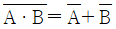
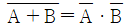
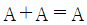
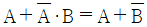
(정답률: 54%)
80. 스위치를 닫거나 열기만 하는 제어동작은?
- 비례동작
- 미분동작
- 적분동작
- 2위치동작
(정답률: 64%)
5과목: 배관일반
81. 증기난방 설비 중 증기헤더에 관한 설명으로 틀린 것은?
- 증기를 일단 증기헤더에 모은 다음 각 계통별로 분배한다.
- 헤더의 설치 위치에 따라 공급헤더와 리턴헤더로 구분한다.
- 증기헤더는 압력계, 드레인 포켓, 트랩장치 등을 함께 부착시킨다.
- 증기헤더의 접속관에 설치하는 밸브류는 바닥 위 5m 정도의 위치에 설치하는 것이 좋다.
(정답률: 52%)
82. 밸브 종류 중 디스크의 형상을 원뿔모양으로 하여 고압 소유량의 유체를 누설 없이 조절할 목적으로 사용하는 밸브는?
- 앵글 밸브
- 슬루스 밸브
- 니들 밸브
- 버터 플라이 밸브
(정답률: 37%)
83. 다음 배관지지 장치 중 변위가 큰 개소에 사용하기에 가장 적절한 행거(hanger)는?
- 리지드 행거
- 콘스탄트 행거
- 베리어블 행거
- 스프링 행거
(정답률: 39%)
84. 냉매유속이 낮아지게 되면 흡입관에서의 오일회수가 어려워지므로 오일회수를 용이하게 하기 위하여 설치하는 것은?
- 이중입상관
- 루프 배관
- 액 트랩
- 리프팅 배관
(정답률: 46%)
85. 보온재의 구비조건으로 틀린 것은?
- 부피와 비중이 커야 한다.
- 흡수성이 적어야 한다.
- 안전사용 온도 범위에 적합해야 한다.
- 열전도율이 낮아야 한다.
(정답률: 63%)
86. 관의 결합방식 표시방법 중 용접식의 그림기호로 옳은 것은?
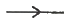
(정답률: 61%)
87. 중차량이 통과하는 도로에서의 급수배관 매설깊이 기준으로 옳은 것은?
- 450 mm 이상
- 750 mm 이상
- 900 mm 이상
- 1200 mm 이상
(정답률: 48%)
88. 공조배관 설계 시 유속을 빠르게 설계하였을 때 나타나는 결과로 옳은 것은?
- 소음이 작아진다.
- 펌프양정이 높아진다.
- 설비비가 커진다.
- 운전비가 감소한다.
(정답률: 55%)
89. 온수난방 설비의 온수배관 시공법에 관한 설명으로 틀린 것은?
- 공기가 고일 염려가 있는 곳에는 공기배출을 고려한다.
- 수평배관에서 관의 지름을 바꿀 때에는 편심레듀서를 사용한다.
- 배관재료는 내열성을 고려한다.
- 팽창관에는 슬루스 밸브를 설치한다.
(정답률: 61%)
90. 지중 매설하는 도시가스배관 설치방법에 대한 설명으로 틀린 것은?
- 배관을 시가지 도로 노면 밑에 매설하는 경우 노면으로부터 배관의 외면까지 1.5m 이상 간격을 두고 설치해야 한다.
- 배관의 외면으로부터 도로의 경계까지 수평거리 1.5m 이상, 도로 밑의 다른 시설물과는 0.5m 이상 간격을 두고 설치해야 한다.
- 배관을 인도·보도 등 노면 외의 도로밑에 매설하는 경우에는 지표면으로부터 배관의 외면까지 1.2m 이상 간격을 두고 설치해야 한다.
- 배관을 포장되어 있는 차도에 매설하는 경우 그 포장부분의 노반의 밑에 매설하고 배관의 외면과 노반의 최하부와의 거리는 0.5m 이상 간격을 두고 설치해야 한다.
(정답률: 28%)
91. 직접 가열식 중앙 급탕법의 급탕 순환 경로의 순서로 옳은 것은?
- 급탕입주관 → 분기관 → 저탕조 → 복귀주관 → 위생기구
- 분기관 → 저탕조 → 급탕입주관 → 위생기구 → 복귀주관
- 저탕조 → 급탕입주관 → 복귀주관 → 분기관 → 위생기구
- 저탕조 → 급탕입주관 → 분기관 → 위생기구 → 복귀주관
(정답률: 43%)
92. 증기압축식 냉동사이클에서 냉매배관의 흡입관은 어느 구간을 의미하는가?
- 압축기 – 응축기 사이
- 응축기 – 팽창밸브 사이
- 팽창밸브 – 증발기 사이
- 증발기 – 압축기 사이
(정답률: 48%)
93. 도시가스의 제조소 및 공급소 밖의 배관 표시기준에 관한 내용으로 틀린 것은?
- 가스배관을 지상에 설치할 경우에는 배관의 표면색상을 황색으로 표시한다.
- 최고사용압력이 중압인 가스배관을 매설할 경우에는 황색으로 표시한다.
- 배관을 지하에 매설하는 경우에는 그 배관이 매설되어 있음을 명확하게 알 수 있도록 표시한다.
- 배관의 외부에 사용가스명, 최고사용압력 및 가스의 흐름방향을 표시하여야 한다. 다만, 지하에 매설하는 경우에는 흐름방향을 표시하지 아니할 수 있다.
(정답률: 43%)
94. 다음 중 수직배관에서 역류방지 목적으로 사용하기에 가장 적절한 밸브는?
- 리프트식 체크밸브
- 스윙식 체크밸브
- 안전밸브
- 코크밸브
(정답률: 49%)
95. 주철관 이음 중 고무링 하나만으로 이음하여 이음과정이 간편하여 관 부설을 신속하게 할 수 있는 것은?
- 기계식 이음
- 빅토릭 이음
- 타이튼 이음
- 소켓 이음
(정답률: 32%)
96. 배수설비의 종류에서 요리실, 욕조, 세척, 싱크와 세면기 등에서 배출되는 물을 배수하는 설비의 명칭으로 옳은 것은?
- 오수 설비
- 잡배수 설비
- 빗물배수 설비
- 특수배수 설비
(정답률: 57%)
97. 연관의 접합 과정에 쓰이는 공구가 아닌 것은?
- 봄볼
- 턴핀
- 드레서
- 사이징툴
(정답률: 49%)
98. 다음 중 동관의 이음방법과 가장 거리가 먼 것은?
- 플레어이음
- 납땜이음
- 플랜지이음
- 소켓이음
(정답률: 37%)
99. 펌프의 양수량이 60m3/min이고 전양정이 20m일 때, 벌류트 펌프로 구동할 경우 필요한 동력(kW)은 얼마인가? (단, 물의 비중량은 9800 N/m3이고, 펌프의 효율은 60% 로 한다.)
- 196.1
- 200
- 326.7
- 4⑤.8
(정답률: 44%)
100. 플래시 밸브 또는 급속 개폐식 수전을 사용할 때 급수의 유속이 불규칙적으로 변하여 생기는 현상을 무엇이라고 하는가?
- 수밀작용
- 파동작용
- 맥동작용
- 수격작용
(정답률: 58%)
수증기에서의 엔탈피 차이는 h1 - h2로 계산할 수 있다. 이를 계산하기 위해서는 수증기에서의 압력과 온도를 알아야 한다. 그림에서는 압력과 온도가 주어져 있으므로, 수증기에서의 엔탈피 차이를 계산할 수 있다.
h1 - h2 = 3435.5 - 267.9 = 3167.6 kJ/kg
터빈의 효율은 그림에서 주어진 값인 0.85로 가정하자. 이를 이용하여 터빈의 출력을 계산할 수 있다.
출력 = 입력 x 효율 - 열손실률
입력 = 질량유량 x (h1 - h2) = 1.5 x 3167.6 = 4751.4 kW
출력 = 4751.4 x 0.85 - 8.5 = 4008.7 kW
따라서, 터빈의 출력은 약 656 kW이다.